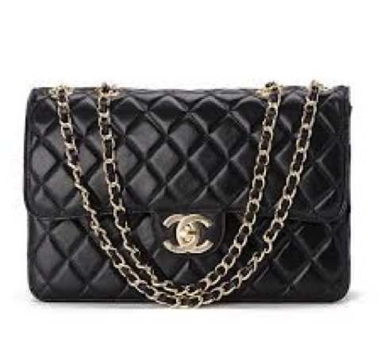

Изобретения Коко Шанель, которые вошли в историю моды
Габриель Шанель — не только знаменитый модельер двадцатого века, но и создательница образа современной свободной и прогрессивной женщины. В двадцатых годах прошлого века дизайнер поняла, что послевоенное время требует комфортную одежду для женщин, в которой удобно работать и заниматься делами.
Именно Коко освободила женщин от корсета — самой тяжелой и неудобной детали дамского гардероба того времени. Шанель создала удобную одежду для женщин, которую можно носить независимо от времени года и дня недели. Знаменитый дизайнер стремилась к тому, чтобы женщины избавились от массивных платьев и вместо нагромождения рюшей показали миру себя.А вот и несколько новвоведений, которые модельер внесла в мир моды:
МАЛЕНЬКОЕ ЧЕРНОЕ ПЛАТЬЕ
Основным вкладом Шанель в женскую моду стало «маленькое черное платье», — простое коктейльное платье, которое до сих пор считается основным элементом гардероба любой женщины. Она создала его в 1926 году. Редакторы Vogue сразу окрестили платье «Форд» в честь классического черного автомобиля той эпохи, утверждая, что шикарный фасон с длинными рукавами из крепдешина без подкладки «станет своего рода униформой для всех женщин со вкусом». И они не ошиблись.
Новаторским в этом платье было все: яркий простой силуэт и лаконичный черный цвет, который с викторианских времен ассоциировался с трауром.
Современники Шанель рассказывали, что конкурирующий с ней кутюрье Поль Пуаре при случайной встрече с ней на улицах Парижа решил съязвить и спросил, намекая на чёрный цвет ее платья: «Кого же вы оплакиваете, мадемуазель?» На что Коко Шанель ответила: «Вас, дорогой месье».
ЖЕНСКИЕ БРЮКИ
Когда в 1914 году разразилась Первая мировая война многие женщины начали носить на рабочем месте брюки и комбинезоны. Коко Шанель сама любила носить брюки, часто заимствуя костюмы своего парня, а потом стала разрабатывать дизайн брюк для женщин, которые можно было бы носить во время занятий спортом и не только. Вскоре брюки стали модной деталью женского гардероба, а не просто функциональной одеждой.
МОДА НА ТРИКОТАЖ
Когда Коко Шанель открыла свой первый магазин в Париже, большая часть коллекции была сшита из трикотажа. Привыкшие к шелку, атласу и другим роскошным материалам, многие клиенты Chanel были шокированы таким выбором ткани, которая традиционно использовалась для мужского нижнего белья. Тем не менее, дизайнер-новатор увидела потенциал для женской одежды в этой ткани — она была недорогой, хорошо драпировалась и подходила для активной жизни ее клиенток. «Я заставляю модных женщин жить, дышать, чувствовать себя комфортно и выглядеть моложе», — заявила Шанель.
СУМКА 2.55
В 1920-х Коко Шанель устала носить сумочки в руке и решила создать сумку, которая освободила бы ее руки. Вдохновленная ремнями на солдатских сумках, она добавила тонкие ремни и представила предшественницу сумки «2,55» в 1929 году. Когда Коко вернулась в моду в середине 50-х годов, она обновила дизайн сумки и создала культовую модель, вошедшую в историю моды как «2.55», которую назвала по дате создания — февраль 1955 года.
МАТРОСКА
В 1858 году кремово-голубая матроска «La Mariniere» надолго стала официальной формой моряков ВМС Бретани. Коко Шанель заметила этот интересный предмет одежды во время отдыха на Французской Ривьере и ввела матроску в свою морскую коллекцию 1917 года.
С тех пор бретонская матроска вошла в моду, ее носили такие иконы стиля, как Бриджит Бардо, Одри Хепберн и Джейн Биркин. А вариации на тему матроски мы регулярно находим в новых летних коллекциях.
ТВИДОВЫЙ КОСТЮМ
Это одно из стильных открытий в период знаменитого романа с герцогом Вестминстерским. Когда Коко гостила у него в Шотландии, ей так понравилась форменная одежда слуг, что вдохновила ее на создание легендарных жакетов. А еще Шанель влюбилась с первого взгляда в твид, прекрасно державший форму, но при этом не терявший своих мягких качеств, и в береты слуг, без козырька, надвинутые на глаза, с большой брошью надо лбом. Вообще, нужно отдать должное предприимчивости Шанель. Всё, что попадалось ей на глаза, она умела превратить в легенду. К примеру, знаменитая цепочка по краям твидового жакета, по ее собственному признанию, – наследие формы кавалеристов из Мулена. В своих моделях она часто использовала вышивку, галуны и тесьму, на них похожую, сделав такие детали своей визитной карточкой.
Кстати, моде на загар мы тоже обязаны Коко Шанель! В начале 20 века бледность считалась эталоном красоты. В 1923 году Шанель превратила загар в модный аксессуар, когда случайно обгорела на солнце во время круиза по Французской Ривьере. По возвращении в Париж публика так восхищалась бронзовым сиянием ее кожи, что модная молодёжь незамедлительно последовала примеру Коко. Так загар стал признаком богатства и красоты.